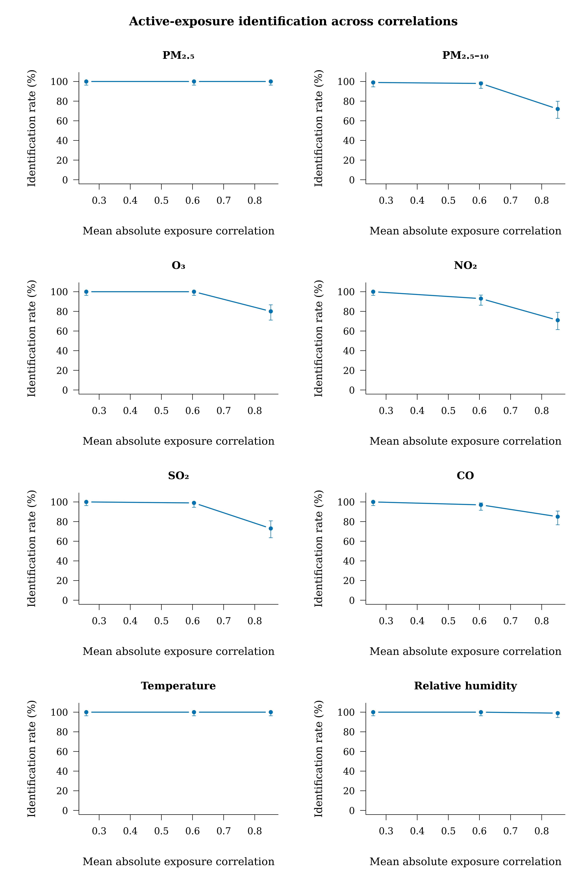
Points are identification rates across KDR-CC G1 repetitions; bars are Wilson 95% Monte Carlo intervals. Selection uses Holm correction across the eight candidates. Overall correlations are measured in the fixed independent evaluation distribution. Tables give planned and usable counts.
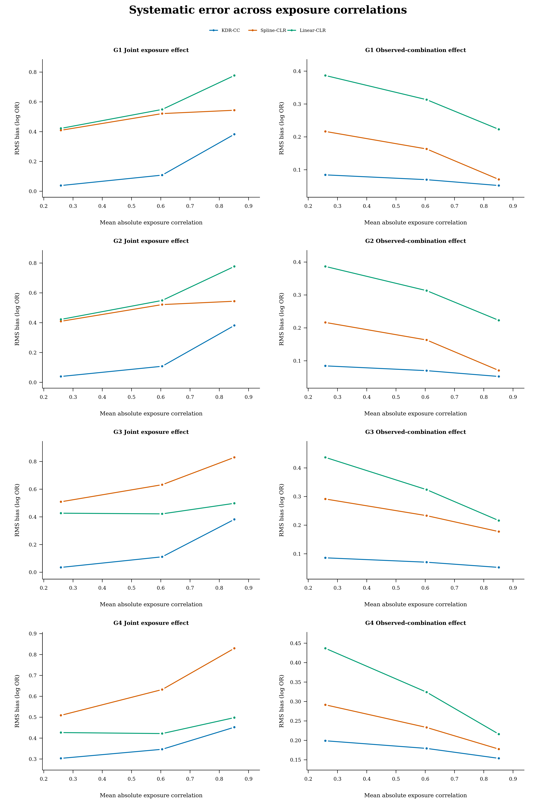
Each point summarizes usable independent repetitions under one overall-correlation setting. The horizontal coordinate is the mean absolute off-diagonal Pearson correlation in the independent evaluation distribution. Joint contrasts use a common concentration path; observed-combination contrasts use the distribution of the corresponding setting. Model configuration and response coefficients are fixed. The matching correct/incorrect CLR adjustment fits supply G1/G2 and G3/G4 displays. Original results are reused from B; moderate/high results are new D repetitions. B and D batches are independent. Tables report usable counts and Monte Carlo uncertainty.
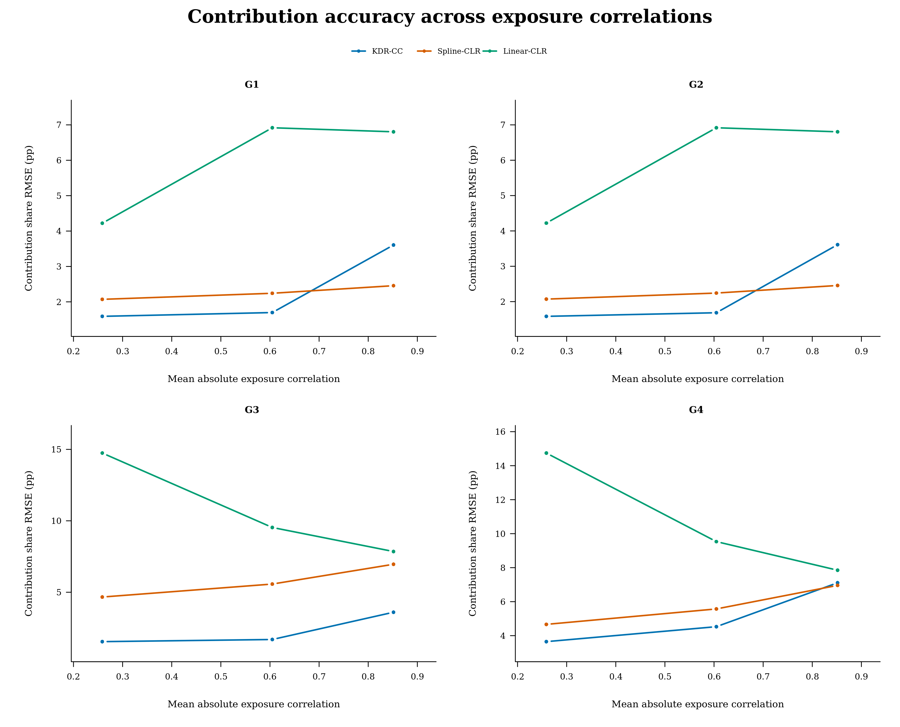
Each point summarizes usable independent repetitions under one overall-correlation setting. The horizontal coordinate is the mean absolute off-diagonal Pearson correlation in the independent evaluation distribution. Joint contrasts use a common concentration path; observed-combination contrasts use the distribution of the corresponding setting. Model configuration and response coefficients are fixed. The matching correct/incorrect CLR adjustment fits supply G1/G2 and G3/G4 displays. Original results are reused from B; moderate/high results are new D repetitions. B and D batches are independent. Tables report usable counts and Monte Carlo uncertainty.
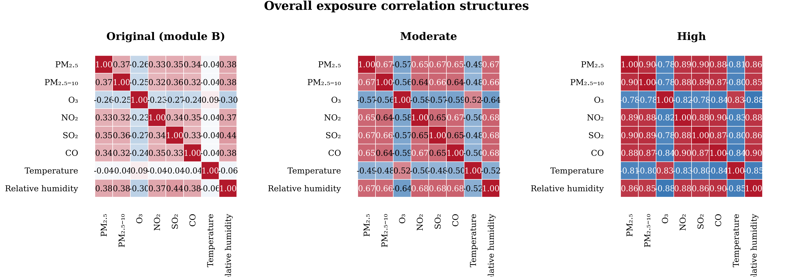
Cell labels are observed Pearson coefficients in the independent evaluation distribution. The shared color scale spans -1 (blue) to +1 (red). Original data and fits come from B. D recouples the final lag-defined exposures using the original marginal distributions; response coefficients and the fixed model configuration are shared. The temporal dependence of exposure trajectories also changes under this recoupling.
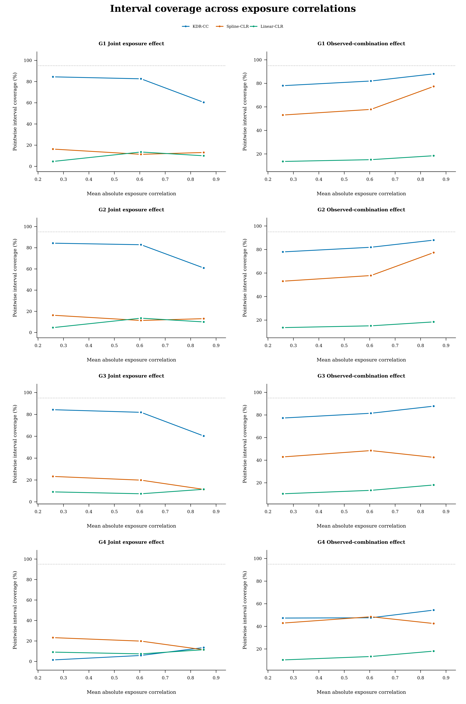
Each point summarizes usable independent repetitions under one overall-correlation setting. The horizontal coordinate is the mean absolute off-diagonal Pearson correlation in the independent evaluation distribution. Joint contrasts use a common concentration path; observed-combination contrasts use the distribution of the corresponding setting. Model configuration and response coefficients are fixed. The matching correct/incorrect CLR adjustment fits supply G1/G2 and G3/G4 displays. Original results are reused from B; moderate/high results are new D repetitions. B and D batches are independent. Tables report usable counts and Monte Carlo uncertainty.
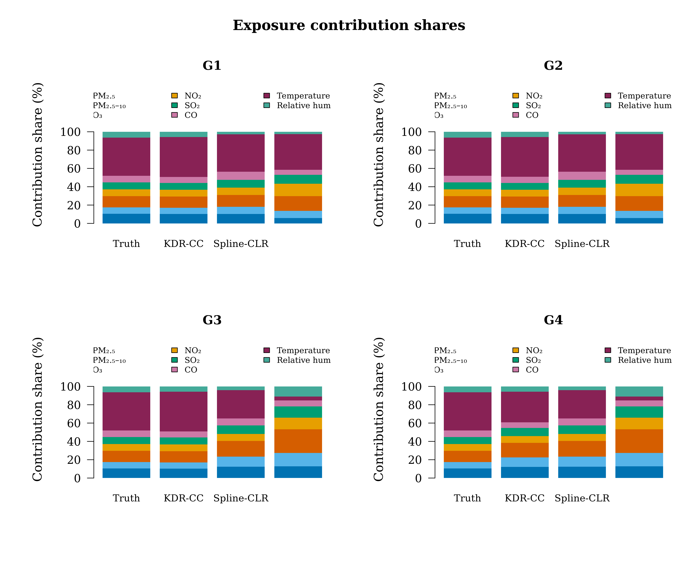
Baseline Shapley values allocate h(x)-h(b), with b the marginal-median reference. Importance is the evaluation-distribution mean absolute Shapley value; shares divide this quantity by its sum over all candidate exposures. Shares sum to 100% within a fit. Their sign-free magnitude includes main and interaction contributions. True and fitted allocations use identical combinations and reference levels. Uncertainty across repetitions is summarized by SD and MCSE. Overall correlation setting: Original (module B) ; mean absolute Pearson coefficient = 0.2586 .
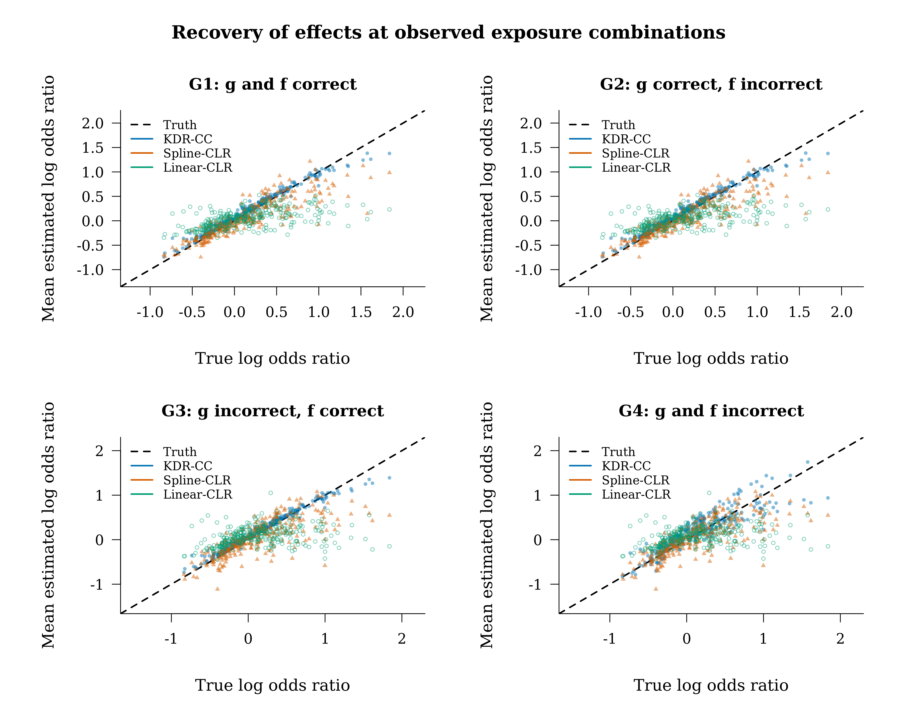
Each point represents one fixed independently sampled exposure combination, relative to the common reference vector. The vertical coordinate is its mean estimate across usable repetitions; the diagonal denotes the true contrast. A deterministic subset of evaluation points is displayed. Variability, RMSE and interval performance are reported in the tables, to quantify individual-fit stability alongside mean prediction agreement. CLR comparisons use the same adjustment settings as the joint-effect figure. Overall correlation setting: Original (module B) ; mean absolute Pearson coefficient = 0.2586 .
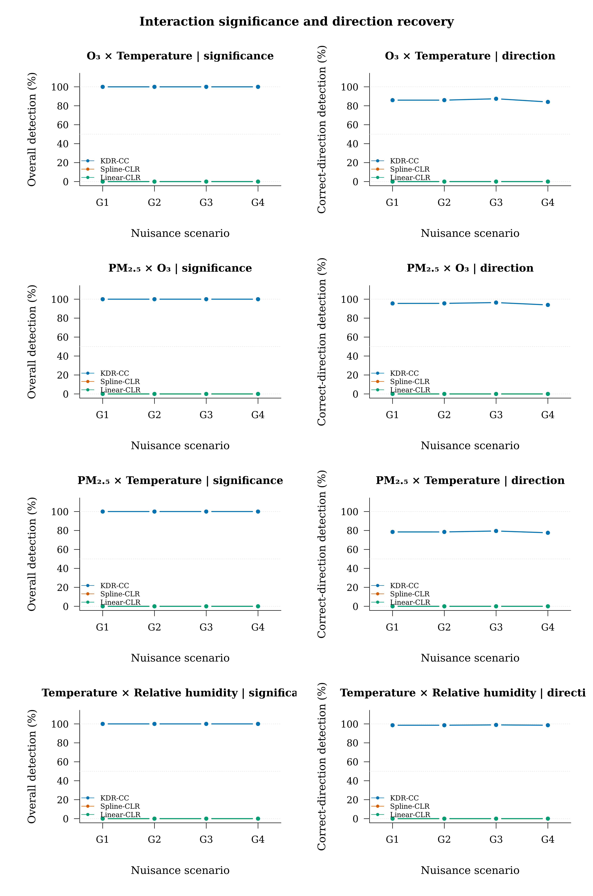
Left: Holm-corrected pairwise interaction detection. Right: correct significant directions after Holm correction of the full interaction grid. Rates are calculated per repetition; tables give uncertainty and wrong-direction rates. Additive CLR models have exactly zero four-point interaction contrasts. Overall correlation setting: Original (module B) ; mean absolute Pearson coefficient = 0.2586 .
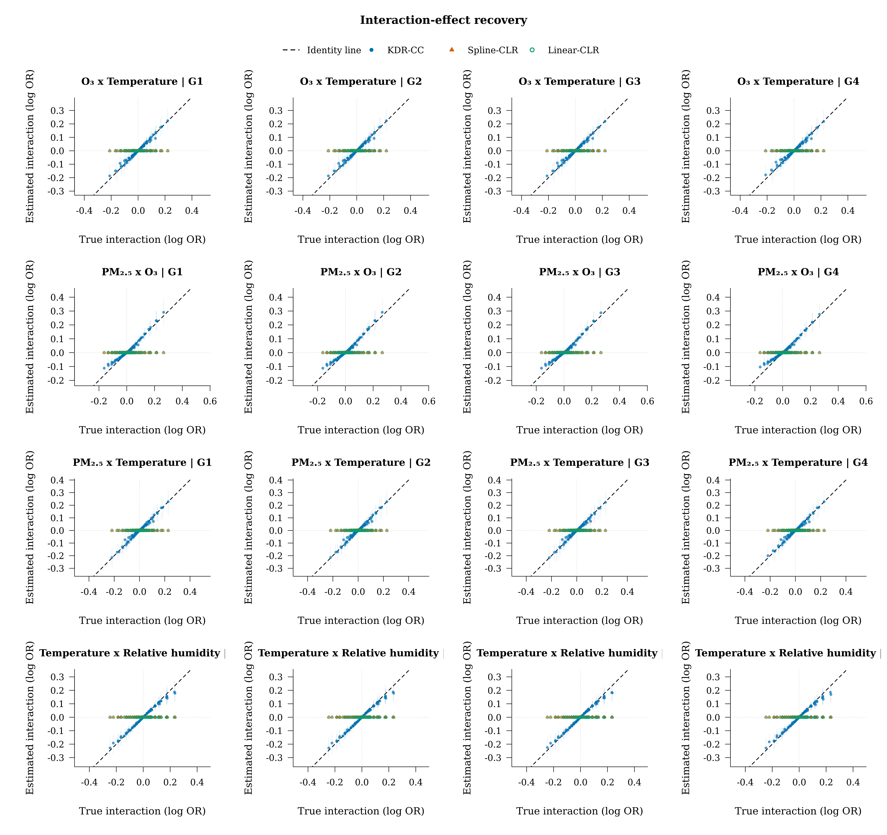
All other exposures are fixed at the saved marginal-median reference. The evaluation range for each exposure is the range of its saved joint-curve concentrations. These constructed combinations define fixed-background response targets; some combinations can have limited data support. The same saved fits and reference vector are used in all comparisons. CLR uses the outcome adjustment: correct-adjustment fits supply G1/G2 and misspecified-adjustment fits supply G3/G4. Rows identify exposure pairs and columns identify nuisance scenarios. Interaction is h(a,b,z0) - h(a,b0,z0) - h(a0,b,z0) + h(a0,b0,z0): departure from additivity on the log OR scale. Both concentrations vary independently over a rectangular grid. Points show true contrasts versus mean predictions across repetitions. Faint vertical segments show empirical central 95% repetition ranges, showing between-repetition variability. Both CLR exposure models are additive and predict zero interaction up to numerical precision; their points can overlap. This structural difference is distinct from nuisance-model robustness. Anchor rows and columns, which have identically zero contrast, are excluded from the scatter and aggregate errors. All remaining points, including genuine zero interactions, enter error summaries. Scales are common across scenarios for each pair. Overall correlation setting: Original (module B) ; mean absolute Pearson coefficient = 0.2586 .
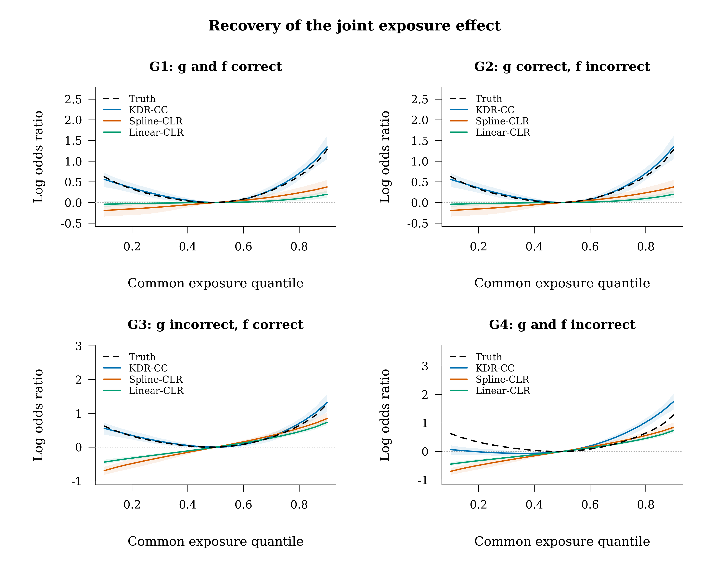
All exposures follow their common marginal quantile, relative to the vector of marginal medians. Curves are means over usable repetitions. Shaded regions are empirical 2.5th–97.5th percentiles across repetitions, showing between-repetition variability. The reference point is zero by construction. CLR uses outcome adjustment, with each correct-adjustment fit supplying G1/G2 and each misspecified-adjustment fit supplying G3/G4. Failure counts and uncertainty metrics are reported separately. Overall correlation setting: Original (module B) ; mean absolute Pearson coefficient = 0.2586 .
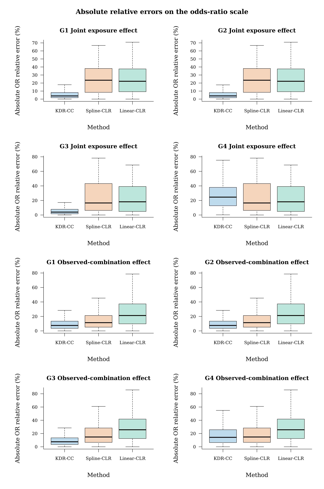
Errors are 100 times abs(exp(estimated log OR minus true log OR) minus 1). Boxes summarize finite evaluation-point-by-repetition errors. Whiskers follow the 1.5-IQR rule; individual outliers are omitted from display only. Overflow errors remain infinite in numeric summaries and are never clipped to improve performance. Means, medians and upper quantiles are reported in the tables. Monte Carlo uncertainty uses independent repetitions. Overall correlation setting: Original (module B) ; mean absolute Pearson coefficient = 0.2586 .
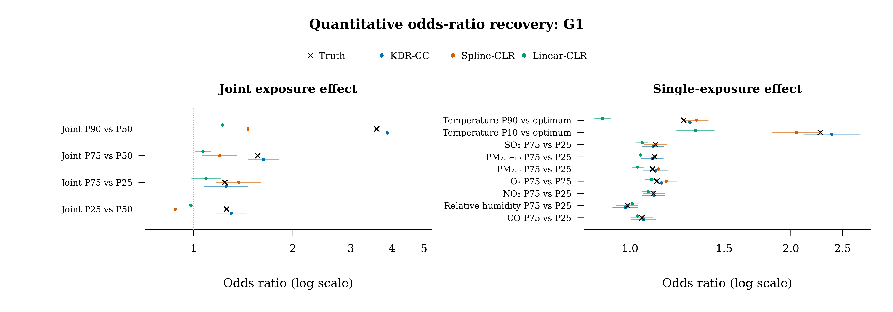
Crosses denote true ORs; colored points denote repetition-mean ORs. Horizontal segments connect the separately averaged pointwise 95% interval endpoints. Full contrast definitions, errors and interval performance are tabulated. Overall correlation setting: Original (module B) ; mean absolute Pearson coefficient = 0.2586 .
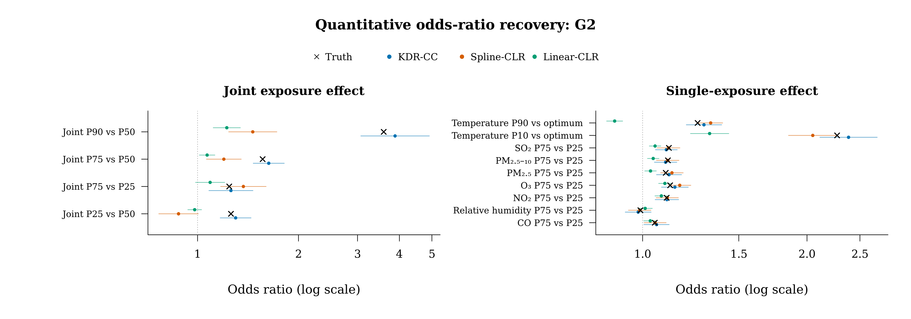
Crosses denote true ORs; colored points denote repetition-mean ORs. Horizontal segments connect the separately averaged pointwise 95% interval endpoints. Full contrast definitions, errors and interval performance are tabulated. Overall correlation setting: Original (module B) ; mean absolute Pearson coefficient = 0.2586 .
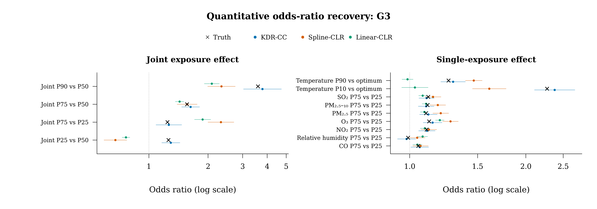
Crosses denote true ORs; colored points denote repetition-mean ORs. Horizontal segments connect the separately averaged pointwise 95% interval endpoints. Full contrast definitions, errors and interval performance are tabulated. Overall correlation setting: Original (module B) ; mean absolute Pearson coefficient = 0.2586 .
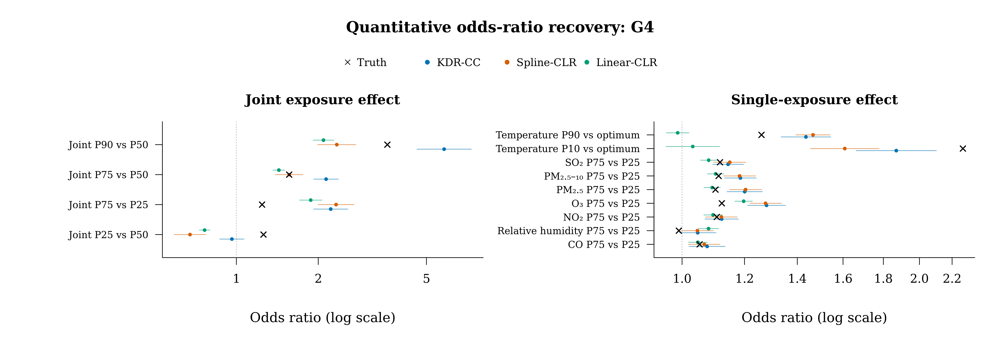
Crosses denote true ORs; colored points denote repetition-mean ORs. Horizontal segments connect the separately averaged pointwise 95% interval endpoints. Full contrast definitions, errors and interval performance are tabulated. Overall correlation setting: Original (module B) ; mean absolute Pearson coefficient = 0.2586 .
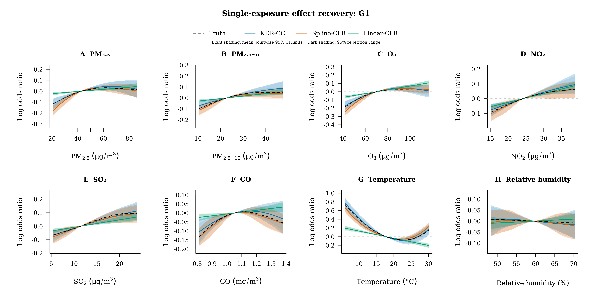
All other exposures are fixed at the saved marginal-median reference. The evaluation range for each exposure is the range of its saved joint-curve concentrations. These constructed combinations define fixed-background response targets; some combinations can have limited data support. The same saved fits and reference vector are used in all comparisons. CLR uses the outcome adjustment: correct-adjustment fits supply G1/G2 and misspecified-adjustment fits supply G3/G4. Each contrast is h(a, reference[-j]) - h(reference), on the log OR scale. This background-specific effect includes interaction contributions at the specified background. Colored lines are means over usable independent repetitions. Interval availability is tabulated at each point. Light shading averages the pointwise 95% interval lower and upper limits separately; darker shading is the empirical 2.5th to 97.5th percentile range of point estimates. These show typical model uncertainty and between-repetition variability, respectively. Axes are identical for each exposure across the four scenario figures. Reference contrasts equal zero by construction and are excluded from aggregate errors. Humidity has no main effect; its median-background response can be small despite its temperature interaction. Overall correlation setting: Original (module B) ; mean absolute Pearson coefficient = 0.2586 .
All other exposures are fixed at the saved marginal-median reference. The evaluation range for each exposure is the range of its saved joint-curve concentrations. These constructed combinations define fixed-background response targets; some combinations can have limited data support. The same saved fits and reference vector are used in all comparisons. CLR uses the outcome adjustment: correct-adjustment fits supply G1/G2 and misspecified-adjustment fits supply G3/G4. Each contrast is h(a, reference[-j]) - h(reference), on the log OR scale. This background-specific effect includes interaction contributions at the specified background. Colored lines are means over usable independent repetitions. Interval availability is tabulated at each point. Light shading averages the pointwise 95% interval lower and upper limits separately; darker shading is the empirical 2.5th to 97.5th percentile range of point estimates. These show typical model uncertainty and between-repetition variability, respectively. Axes are identical for each exposure across the four scenario figures. Reference contrasts equal zero by construction and are excluded from aggregate errors. Humidity has no main effect; its median-background response can be small despite its temperature interaction. Overall correlation setting: Original (module B) ; mean absolute Pearson coefficient = 0.2586 .
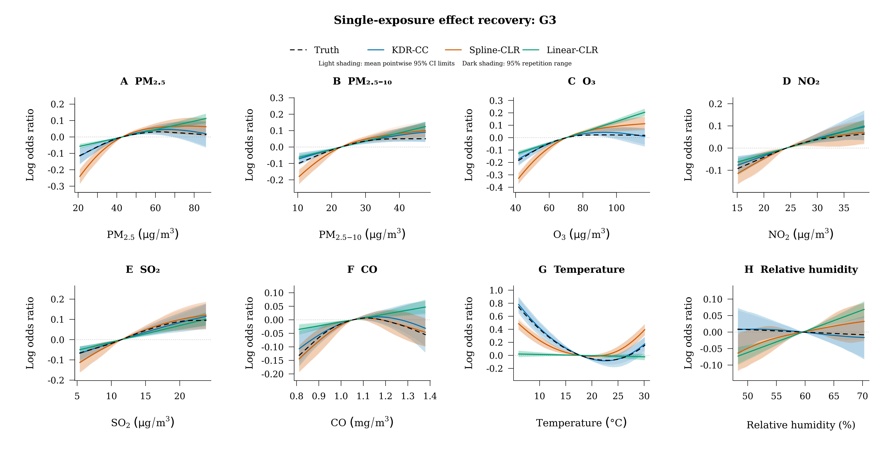
All other exposures are fixed at the saved marginal-median reference. The evaluation range for each exposure is the range of its saved joint-curve concentrations. These constructed combinations define fixed-background response targets; some combinations can have limited data support. The same saved fits and reference vector are used in all comparisons. CLR uses the outcome adjustment: correct-adjustment fits supply G1/G2 and misspecified-adjustment fits supply G3/G4. Each contrast is h(a, reference[-j]) - h(reference), on the log OR scale. This background-specific effect includes interaction contributions at the specified background. Colored lines are means over usable independent repetitions. Interval availability is tabulated at each point. Light shading averages the pointwise 95% interval lower and upper limits separately; darker shading is the empirical 2.5th to 97.5th percentile range of point estimates. These show typical model uncertainty and between-repetition variability, respectively. Axes are identical for each exposure across the four scenario figures. Reference contrasts equal zero by construction and are excluded from aggregate errors. Humidity has no main effect; its median-background response can be small despite its temperature interaction. Overall correlation setting: Original (module B) ; mean absolute Pearson coefficient = 0.2586 .
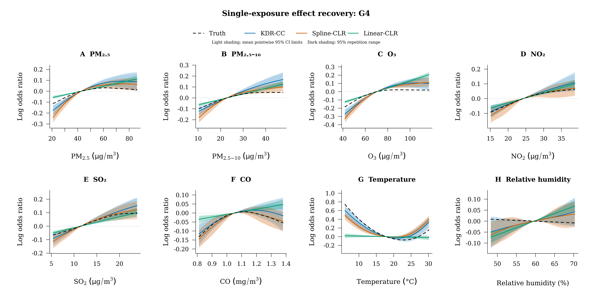
All other exposures are fixed at the saved marginal-median reference. The evaluation range for each exposure is the range of its saved joint-curve concentrations. These constructed combinations define fixed-background response targets; some combinations can have limited data support. The same saved fits and reference vector are used in all comparisons. CLR uses the outcome adjustment: correct-adjustment fits supply G1/G2 and misspecified-adjustment fits supply G3/G4. Each contrast is h(a, reference[-j]) - h(reference), on the log OR scale. This background-specific effect includes interaction contributions at the specified background. Colored lines are means over usable independent repetitions. Interval availability is tabulated at each point. Light shading averages the pointwise 95% interval lower and upper limits separately; darker shading is the empirical 2.5th to 97.5th percentile range of point estimates. These show typical model uncertainty and between-repetition variability, respectively. Axes are identical for each exposure across the four scenario figures. Reference contrasts equal zero by construction and are excluded from aggregate errors. Humidity has no main effect; its median-background response can be small despite its temperature interaction. Overall correlation setting: Original (module B) ; mean absolute Pearson coefficient = 0.2586 .
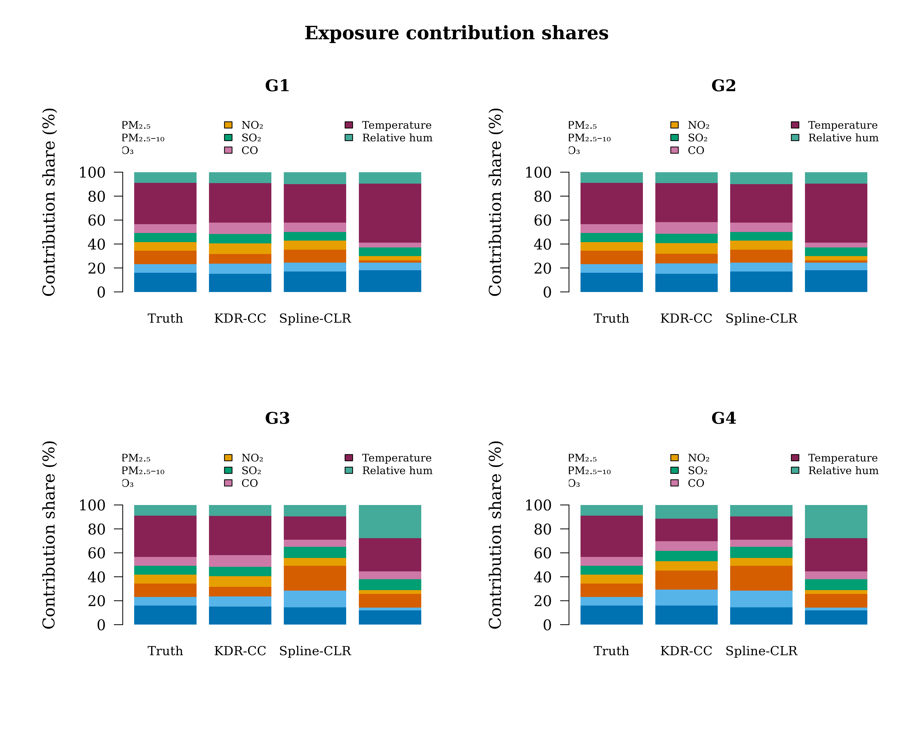
Baseline Shapley values allocate h(x)-h(b), with b the marginal-median reference. Importance is the evaluation-distribution mean absolute Shapley value; shares divide this quantity by its sum over all candidate exposures. Shares sum to 100% within a fit. Their sign-free magnitude includes main and interaction contributions. True and fitted allocations use identical combinations and reference levels. Uncertainty across repetitions is summarized by SD and MCSE. Overall correlation setting: High ; mean absolute Pearson coefficient = 0.8515 .
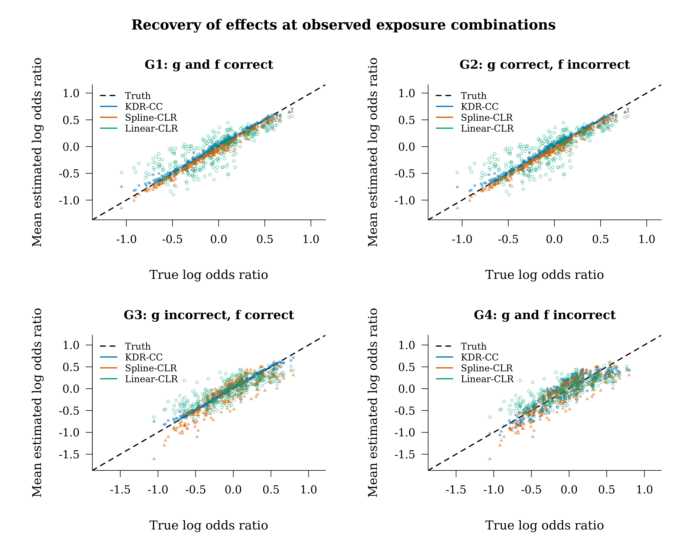
Each point represents one fixed independently sampled exposure combination, relative to the common reference vector. The vertical coordinate is its mean estimate across usable repetitions; the diagonal denotes the true contrast. A deterministic subset of evaluation points is displayed. Variability, RMSE and interval performance are reported in the tables, to quantify individual-fit stability alongside mean prediction agreement. CLR comparisons use the same adjustment settings as the joint-effect figure. Overall correlation setting: High ; mean absolute Pearson coefficient = 0.8515 .
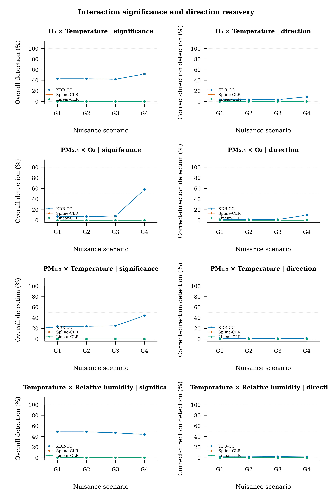
Left: Holm-corrected pairwise interaction detection. Right: correct significant directions after Holm correction of the full interaction grid. Rates are calculated per repetition; tables give uncertainty and wrong-direction rates. Additive CLR models have exactly zero four-point interaction contrasts. Overall correlation setting: High ; mean absolute Pearson coefficient = 0.8515 .
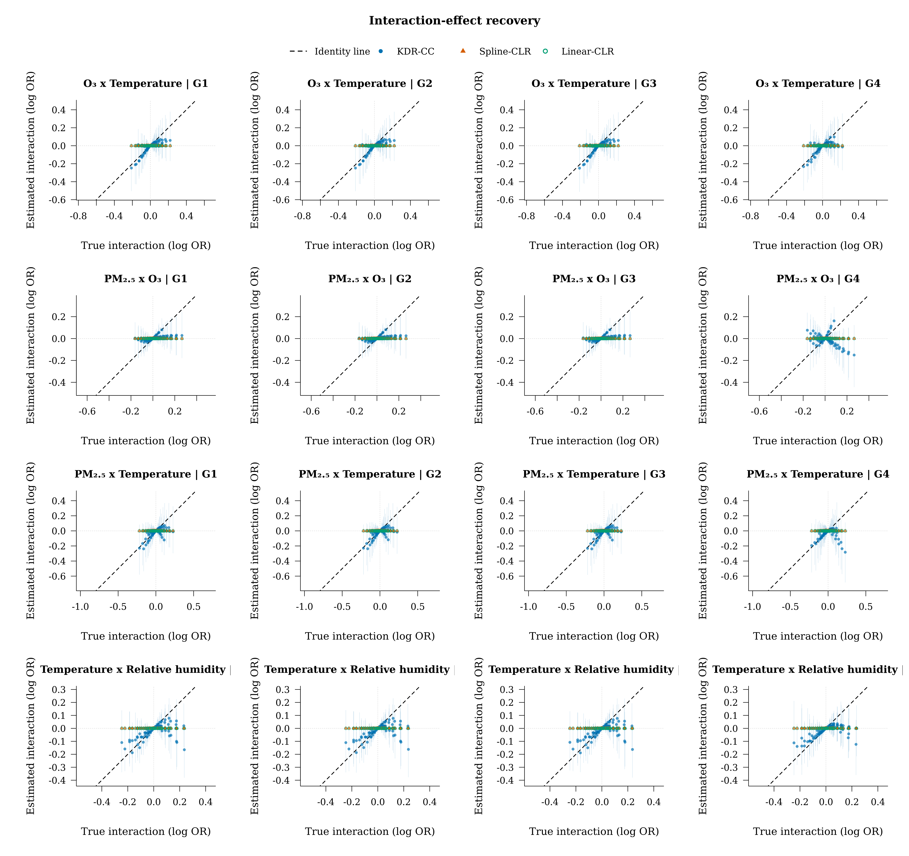
All other exposures are fixed at the saved marginal-median reference. The evaluation range for each exposure is the range of its saved joint-curve concentrations. These constructed combinations define fixed-background response targets; some combinations can have limited data support. The same saved fits and reference vector are used in all comparisons. CLR uses the outcome adjustment: correct-adjustment fits supply G1/G2 and misspecified-adjustment fits supply G3/G4. Rows identify exposure pairs and columns identify nuisance scenarios. Interaction is h(a,b,z0) - h(a,b0,z0) - h(a0,b,z0) + h(a0,b0,z0): departure from additivity on the log OR scale. Both concentrations vary independently over a rectangular grid. Points show true contrasts versus mean predictions across repetitions. Faint vertical segments show empirical central 95% repetition ranges, showing between-repetition variability. Both CLR exposure models are additive and predict zero interaction up to numerical precision; their points can overlap. This structural difference is distinct from nuisance-model robustness. Anchor rows and columns, which have identically zero contrast, are excluded from the scatter and aggregate errors. All remaining points, including genuine zero interactions, enter error summaries. Scales are common across scenarios for each pair. Overall correlation setting: High ; mean absolute Pearson coefficient = 0.8515 .
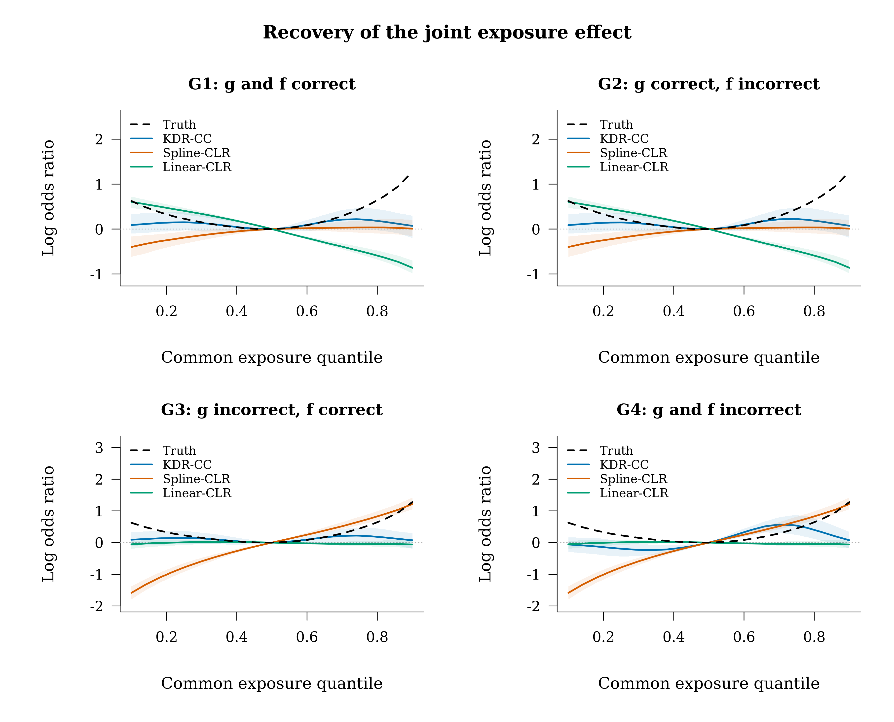
All exposures follow their common marginal quantile, relative to the vector of marginal medians. Curves are means over usable repetitions. Shaded regions are empirical 2.5th–97.5th percentiles across repetitions, showing between-repetition variability. The reference point is zero by construction. CLR uses outcome adjustment, with each correct-adjustment fit supplying G1/G2 and each misspecified-adjustment fit supplying G3/G4. Failure counts and uncertainty metrics are reported separately. Overall correlation setting: High ; mean absolute Pearson coefficient = 0.8515 .
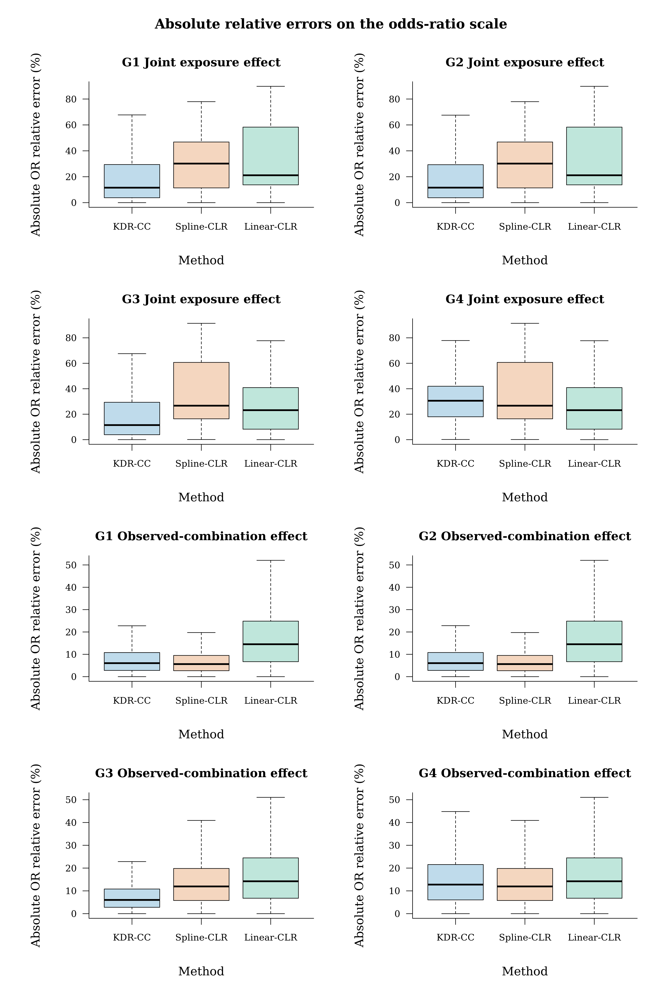
Errors are 100 times abs(exp(estimated log OR minus true log OR) minus 1). Boxes summarize finite evaluation-point-by-repetition errors. Whiskers follow the 1.5-IQR rule; individual outliers are omitted from display only. Overflow errors remain infinite in numeric summaries and are never clipped to improve performance. Means, medians and upper quantiles are reported in the tables. Monte Carlo uncertainty uses independent repetitions. Overall correlation setting: High ; mean absolute Pearson coefficient = 0.8515 .
Crosses denote true ORs; colored points denote repetition-mean ORs. Horizontal segments connect the separately averaged pointwise 95% interval endpoints. Full contrast definitions, errors and interval performance are tabulated. Overall correlation setting: High ; mean absolute Pearson coefficient = 0.8515 .
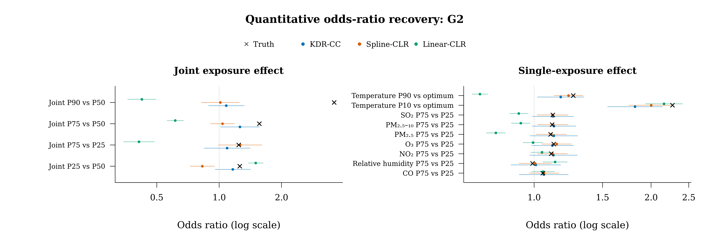
Crosses denote true ORs; colored points denote repetition-mean ORs. Horizontal segments connect the separately averaged pointwise 95% interval endpoints. Full contrast definitions, errors and interval performance are tabulated. Overall correlation setting: High ; mean absolute Pearson coefficient = 0.8515 .
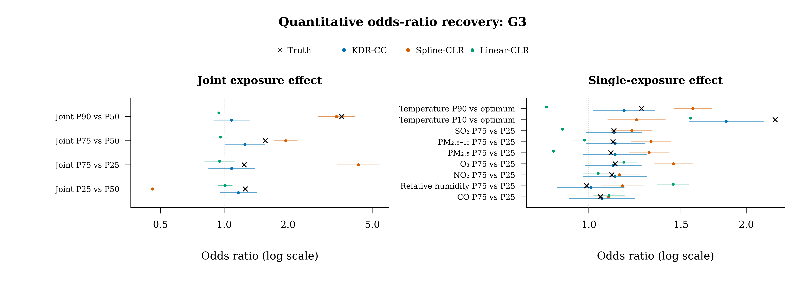
Crosses denote true ORs; colored points denote repetition-mean ORs. Horizontal segments connect the separately averaged pointwise 95% interval endpoints. Full contrast definitions, errors and interval performance are tabulated. Overall correlation setting: High ; mean absolute Pearson coefficient = 0.8515 .
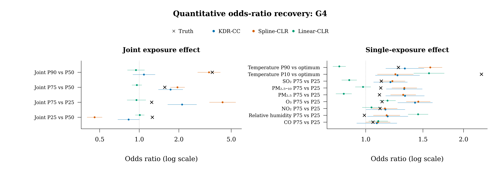
Crosses denote true ORs; colored points denote repetition-mean ORs. Horizontal segments connect the separately averaged pointwise 95% interval endpoints. Full contrast definitions, errors and interval performance are tabulated. Overall correlation setting: High ; mean absolute Pearson coefficient = 0.8515 .
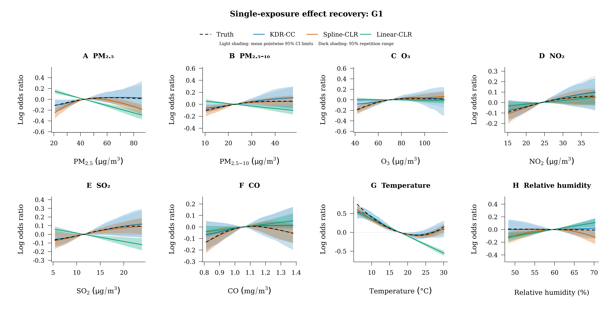
All other exposures are fixed at the saved marginal-median reference. The evaluation range for each exposure is the range of its saved joint-curve concentrations. These constructed combinations define fixed-background response targets; some combinations can have limited data support. The same saved fits and reference vector are used in all comparisons. CLR uses the outcome adjustment: correct-adjustment fits supply G1/G2 and misspecified-adjustment fits supply G3/G4. Each contrast is h(a, reference[-j]) - h(reference), on the log OR scale. This background-specific effect includes interaction contributions at the specified background. Colored lines are means over usable independent repetitions. Interval availability is tabulated at each point. Light shading averages the pointwise 95% interval lower and upper limits separately; darker shading is the empirical 2.5th to 97.5th percentile range of point estimates. These show typical model uncertainty and between-repetition variability, respectively. Axes are identical for each exposure across the four scenario figures. Reference contrasts equal zero by construction and are excluded from aggregate errors. Humidity has no main effect; its median-background response can be small despite its temperature interaction. Overall correlation setting: High ; mean absolute Pearson coefficient = 0.8515 .
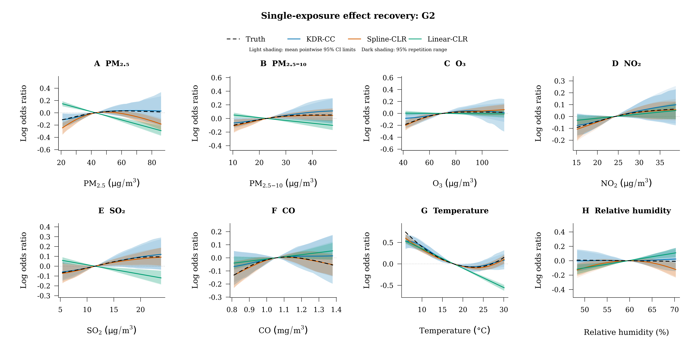
All other exposures are fixed at the saved marginal-median reference. The evaluation range for each exposure is the range of its saved joint-curve concentrations. These constructed combinations define fixed-background response targets; some combinations can have limited data support. The same saved fits and reference vector are used in all comparisons. CLR uses the outcome adjustment: correct-adjustment fits supply G1/G2 and misspecified-adjustment fits supply G3/G4. Each contrast is h(a, reference[-j]) - h(reference), on the log OR scale. This background-specific effect includes interaction contributions at the specified background. Colored lines are means over usable independent repetitions. Interval availability is tabulated at each point. Light shading averages the pointwise 95% interval lower and upper limits separately; darker shading is the empirical 2.5th to 97.5th percentile range of point estimates. These show typical model uncertainty and between-repetition variability, respectively. Axes are identical for each exposure across the four scenario figures. Reference contrasts equal zero by construction and are excluded from aggregate errors. Humidity has no main effect; its median-background response can be small despite its temperature interaction. Overall correlation setting: High ; mean absolute Pearson coefficient = 0.8515 .
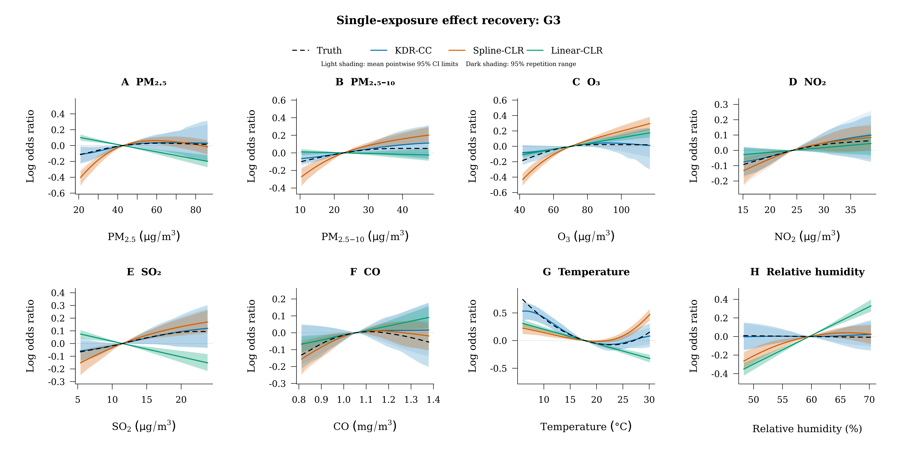
All other exposures are fixed at the saved marginal-median reference. The evaluation range for each exposure is the range of its saved joint-curve concentrations. These constructed combinations define fixed-background response targets; some combinations can have limited data support. The same saved fits and reference vector are used in all comparisons. CLR uses the outcome adjustment: correct-adjustment fits supply G1/G2 and misspecified-adjustment fits supply G3/G4. Each contrast is h(a, reference[-j]) - h(reference), on the log OR scale. This background-specific effect includes interaction contributions at the specified background. Colored lines are means over usable independent repetitions. Interval availability is tabulated at each point. Light shading averages the pointwise 95% interval lower and upper limits separately; darker shading is the empirical 2.5th to 97.5th percentile range of point estimates. These show typical model uncertainty and between-repetition variability, respectively. Axes are identical for each exposure across the four scenario figures. Reference contrasts equal zero by construction and are excluded from aggregate errors. Humidity has no main effect; its median-background response can be small despite its temperature interaction. Overall correlation setting: High ; mean absolute Pearson coefficient = 0.8515 .
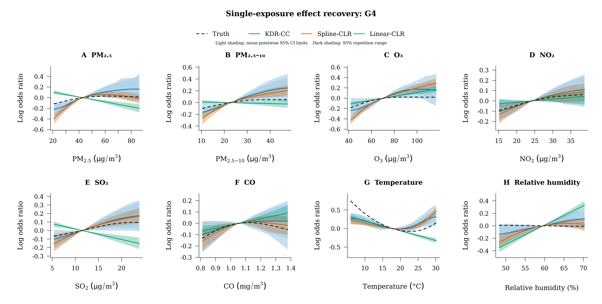
All other exposures are fixed at the saved marginal-median reference. The evaluation range for each exposure is the range of its saved joint-curve concentrations. These constructed combinations define fixed-background response targets; some combinations can have limited data support. The same saved fits and reference vector are used in all comparisons. CLR uses the outcome adjustment: correct-adjustment fits supply G1/G2 and misspecified-adjustment fits supply G3/G4. Each contrast is h(a, reference[-j]) - h(reference), on the log OR scale. This background-specific effect includes interaction contributions at the specified background. Colored lines are means over usable independent repetitions. Interval availability is tabulated at each point. Light shading averages the pointwise 95% interval lower and upper limits separately; darker shading is the empirical 2.5th to 97.5th percentile range of point estimates. These show typical model uncertainty and between-repetition variability, respectively. Axes are identical for each exposure across the four scenario figures. Reference contrasts equal zero by construction and are excluded from aggregate errors. Humidity has no main effect; its median-background response can be small despite its temperature interaction. Overall correlation setting: High ; mean absolute Pearson coefficient = 0.8515 .
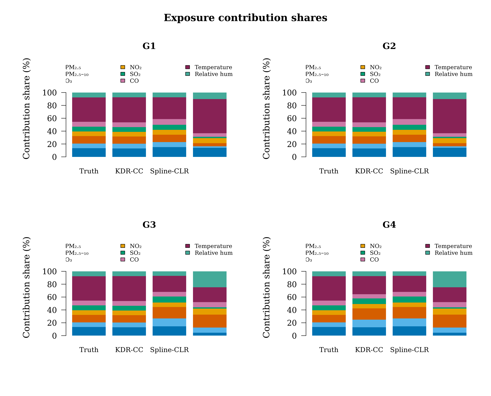
Baseline Shapley values allocate h(x)-h(b), with b the marginal-median reference. Importance is the evaluation-distribution mean absolute Shapley value; shares divide this quantity by its sum over all candidate exposures. Shares sum to 100% within a fit. Their sign-free magnitude includes main and interaction contributions. True and fitted allocations use identical combinations and reference levels. Uncertainty across repetitions is summarized by SD and MCSE. Overall correlation setting: Moderate ; mean absolute Pearson coefficient = 0.6047 .
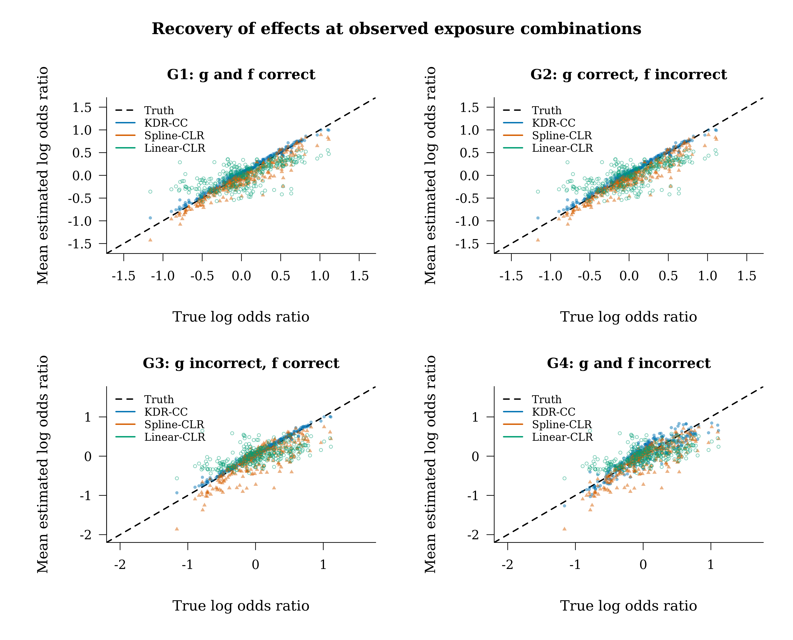
Each point represents one fixed independently sampled exposure combination, relative to the common reference vector. The vertical coordinate is its mean estimate across usable repetitions; the diagonal denotes the true contrast. A deterministic subset of evaluation points is displayed. Variability, RMSE and interval performance are reported in the tables, to quantify individual-fit stability alongside mean prediction agreement. CLR comparisons use the same adjustment settings as the joint-effect figure. Overall correlation setting: Moderate ; mean absolute Pearson coefficient = 0.6047 .
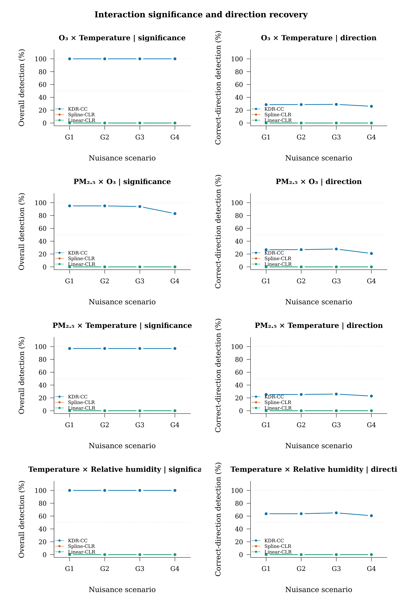
Left: Holm-corrected pairwise interaction detection. Right: correct significant directions after Holm correction of the full interaction grid. Rates are calculated per repetition; tables give uncertainty and wrong-direction rates. Additive CLR models have exactly zero four-point interaction contrasts. Overall correlation setting: Moderate ; mean absolute Pearson coefficient = 0.6047 .
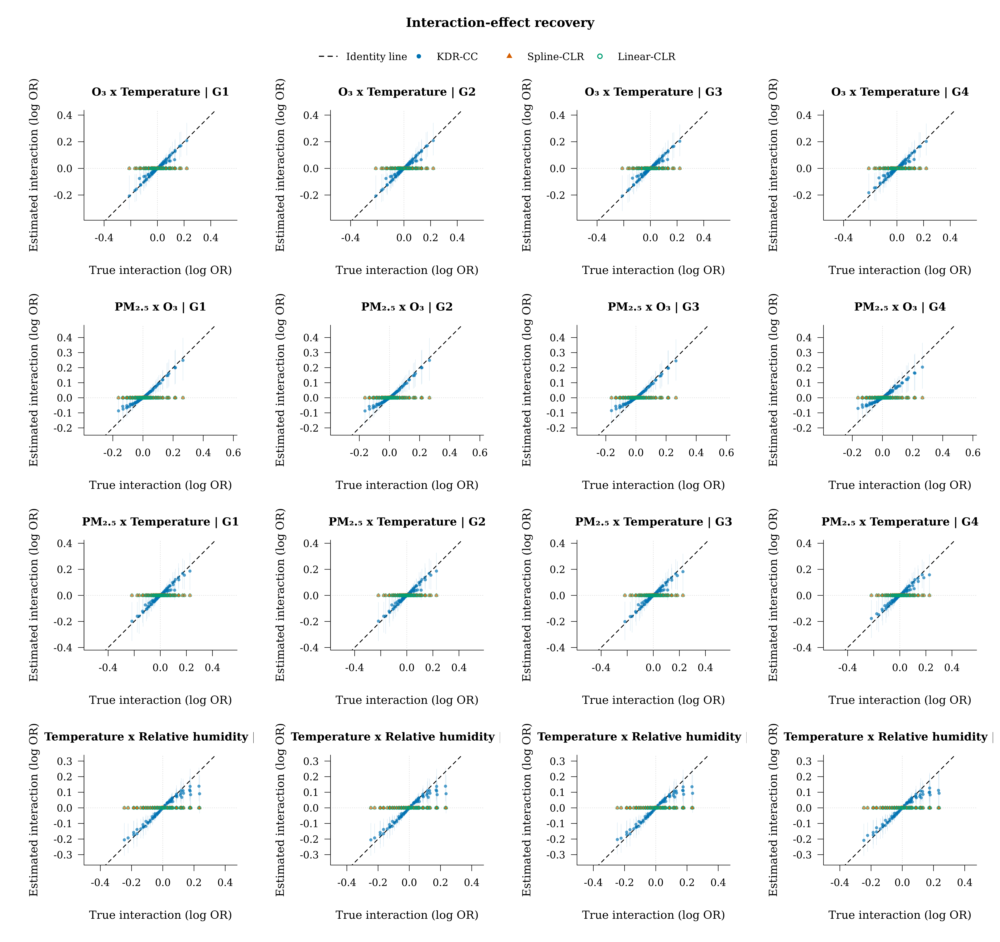
All other exposures are fixed at the saved marginal-median reference. The evaluation range for each exposure is the range of its saved joint-curve concentrations. These constructed combinations define fixed-background response targets; some combinations can have limited data support. The same saved fits and reference vector are used in all comparisons. CLR uses the outcome adjustment: correct-adjustment fits supply G1/G2 and misspecified-adjustment fits supply G3/G4. Rows identify exposure pairs and columns identify nuisance scenarios. Interaction is h(a,b,z0) - h(a,b0,z0) - h(a0,b,z0) + h(a0,b0,z0): departure from additivity on the log OR scale. Both concentrations vary independently over a rectangular grid. Points show true contrasts versus mean predictions across repetitions. Faint vertical segments show empirical central 95% repetition ranges, showing between-repetition variability. Both CLR exposure models are additive and predict zero interaction up to numerical precision; their points can overlap. This structural difference is distinct from nuisance-model robustness. Anchor rows and columns, which have identically zero contrast, are excluded from the scatter and aggregate errors. All remaining points, including genuine zero interactions, enter error summaries. Scales are common across scenarios for each pair. Overall correlation setting: Moderate ; mean absolute Pearson coefficient = 0.6047 .
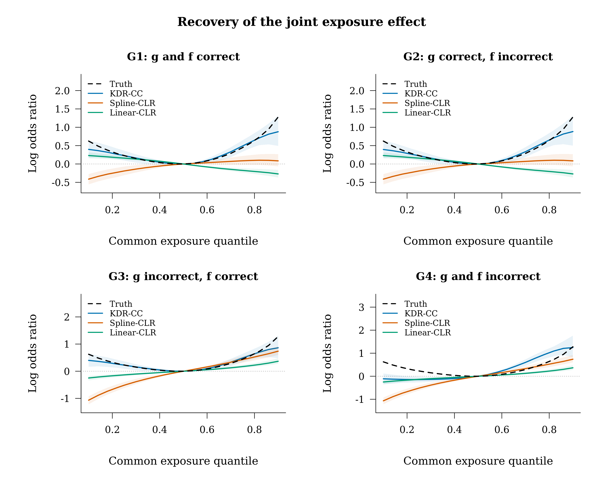
All exposures follow their common marginal quantile, relative to the vector of marginal medians. Curves are means over usable repetitions. Shaded regions are empirical 2.5th–97.5th percentiles across repetitions, showing between-repetition variability. The reference point is zero by construction. CLR uses outcome adjustment, with each correct-adjustment fit supplying G1/G2 and each misspecified-adjustment fit supplying G3/G4. Failure counts and uncertainty metrics are reported separately. Overall correlation setting: Moderate ; mean absolute Pearson coefficient = 0.6047 .
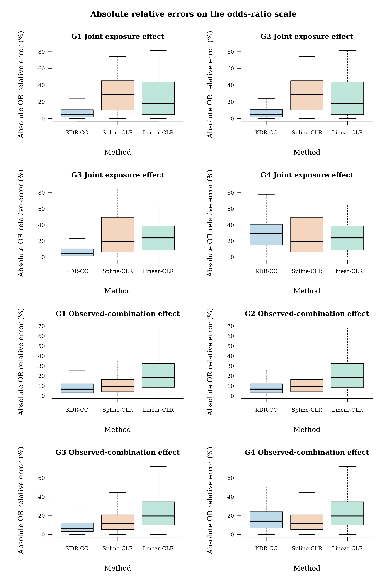
Errors are 100 times abs(exp(estimated log OR minus true log OR) minus 1). Boxes summarize finite evaluation-point-by-repetition errors. Whiskers follow the 1.5-IQR rule; individual outliers are omitted from display only. Overflow errors remain infinite in numeric summaries and are never clipped to improve performance. Means, medians and upper quantiles are reported in the tables. Monte Carlo uncertainty uses independent repetitions. Overall correlation setting: Moderate ; mean absolute Pearson coefficient = 0.6047 .
Crosses denote true ORs; colored points denote repetition-mean ORs. Horizontal segments connect the separately averaged pointwise 95% interval endpoints. Full contrast definitions, errors and interval performance are tabulated. Overall correlation setting: Moderate ; mean absolute Pearson coefficient = 0.6047 .
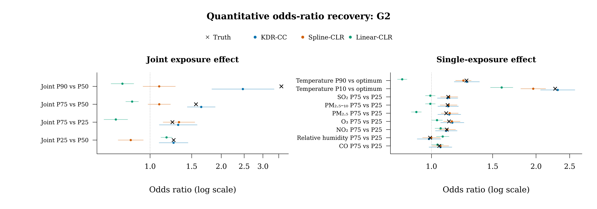
Crosses denote true ORs; colored points denote repetition-mean ORs. Horizontal segments connect the separately averaged pointwise 95% interval endpoints. Full contrast definitions, errors and interval performance are tabulated. Overall correlation setting: Moderate ; mean absolute Pearson coefficient = 0.6047 .
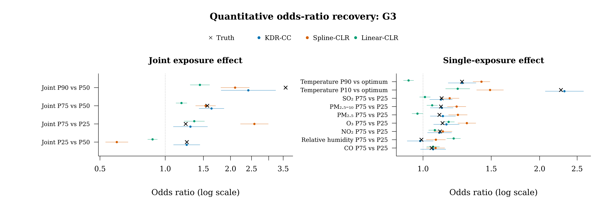
Crosses denote true ORs; colored points denote repetition-mean ORs. Horizontal segments connect the separately averaged pointwise 95% interval endpoints. Full contrast definitions, errors and interval performance are tabulated. Overall correlation setting: Moderate ; mean absolute Pearson coefficient = 0.6047 .
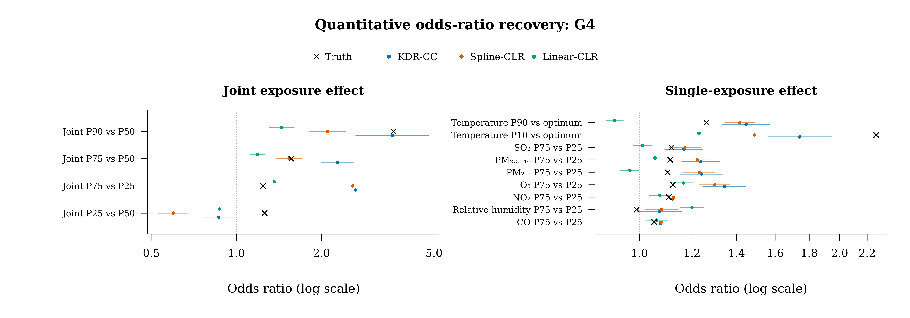
Crosses denote true ORs; colored points denote repetition-mean ORs. Horizontal segments connect the separately averaged pointwise 95% interval endpoints. Full contrast definitions, errors and interval performance are tabulated. Overall correlation setting: Moderate ; mean absolute Pearson coefficient = 0.6047 .
All other exposures are fixed at the saved marginal-median reference. The evaluation range for each exposure is the range of its saved joint-curve concentrations. These constructed combinations define fixed-background response targets; some combinations can have limited data support. The same saved fits and reference vector are used in all comparisons. CLR uses the outcome adjustment: correct-adjustment fits supply G1/G2 and misspecified-adjustment fits supply G3/G4. Each contrast is h(a, reference[-j]) - h(reference), on the log OR scale. This background-specific effect includes interaction contributions at the specified background. Colored lines are means over usable independent repetitions. Interval availability is tabulated at each point. Light shading averages the pointwise 95% interval lower and upper limits separately; darker shading is the empirical 2.5th to 97.5th percentile range of point estimates. These show typical model uncertainty and between-repetition variability, respectively. Axes are identical for each exposure across the four scenario figures. Reference contrasts equal zero by construction and are excluded from aggregate errors. Humidity has no main effect; its median-background response can be small despite its temperature interaction. Overall correlation setting: Moderate ; mean absolute Pearson coefficient = 0.6047 .
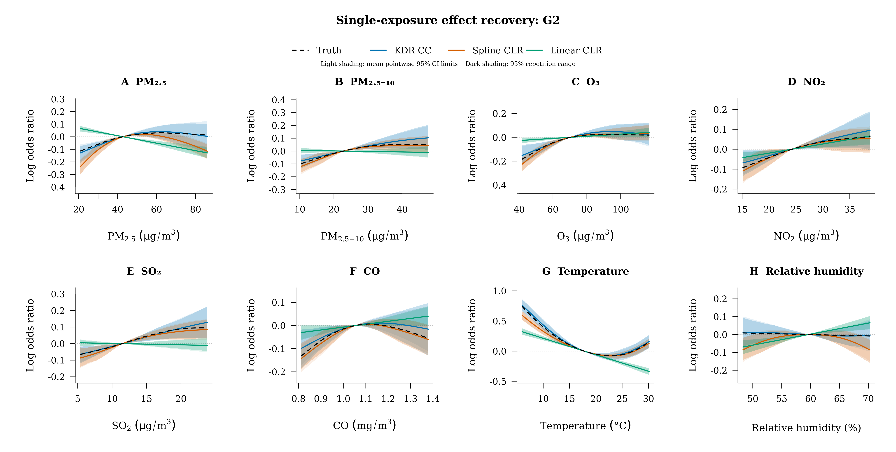
All other exposures are fixed at the saved marginal-median reference. The evaluation range for each exposure is the range of its saved joint-curve concentrations. These constructed combinations define fixed-background response targets; some combinations can have limited data support. The same saved fits and reference vector are used in all comparisons. CLR uses the outcome adjustment: correct-adjustment fits supply G1/G2 and misspecified-adjustment fits supply G3/G4. Each contrast is h(a, reference[-j]) - h(reference), on the log OR scale. This background-specific effect includes interaction contributions at the specified background. Colored lines are means over usable independent repetitions. Interval availability is tabulated at each point. Light shading averages the pointwise 95% interval lower and upper limits separately; darker shading is the empirical 2.5th to 97.5th percentile range of point estimates. These show typical model uncertainty and between-repetition variability, respectively. Axes are identical for each exposure across the four scenario figures. Reference contrasts equal zero by construction and are excluded from aggregate errors. Humidity has no main effect; its median-background response can be small despite its temperature interaction. Overall correlation setting: Moderate ; mean absolute Pearson coefficient = 0.6047 .
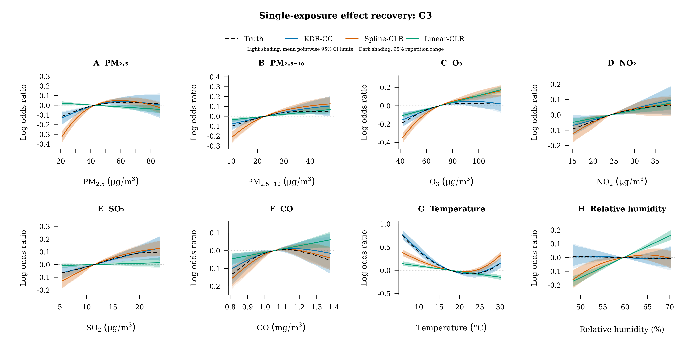
All other exposures are fixed at the saved marginal-median reference. The evaluation range for each exposure is the range of its saved joint-curve concentrations. These constructed combinations define fixed-background response targets; some combinations can have limited data support. The same saved fits and reference vector are used in all comparisons. CLR uses the outcome adjustment: correct-adjustment fits supply G1/G2 and misspecified-adjustment fits supply G3/G4. Each contrast is h(a, reference[-j]) - h(reference), on the log OR scale. This background-specific effect includes interaction contributions at the specified background. Colored lines are means over usable independent repetitions. Interval availability is tabulated at each point. Light shading averages the pointwise 95% interval lower and upper limits separately; darker shading is the empirical 2.5th to 97.5th percentile range of point estimates. These show typical model uncertainty and between-repetition variability, respectively. Axes are identical for each exposure across the four scenario figures. Reference contrasts equal zero by construction and are excluded from aggregate errors. Humidity has no main effect; its median-background response can be small despite its temperature interaction. Overall correlation setting: Moderate ; mean absolute Pearson coefficient = 0.6047 .
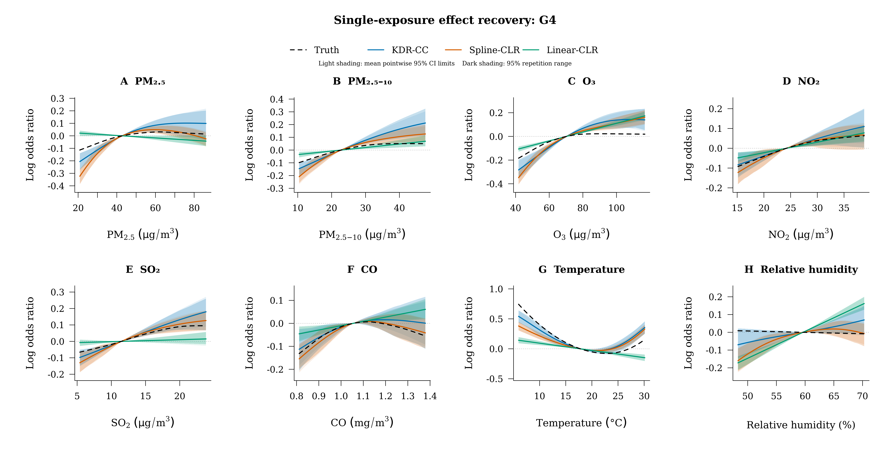
All other exposures are fixed at the saved marginal-median reference. The evaluation range for each exposure is the range of its saved joint-curve concentrations. These constructed combinations define fixed-background response targets; some combinations can have limited data support. The same saved fits and reference vector are used in all comparisons. CLR uses the outcome adjustment: correct-adjustment fits supply G1/G2 and misspecified-adjustment fits supply G3/G4. Each contrast is h(a, reference[-j]) - h(reference), on the log OR scale. This background-specific effect includes interaction contributions at the specified background. Colored lines are means over usable independent repetitions. Interval availability is tabulated at each point. Light shading averages the pointwise 95% interval lower and upper limits separately; darker shading is the empirical 2.5th to 97.5th percentile range of point estimates. These show typical model uncertainty and between-repetition variability, respectively. Axes are identical for each exposure across the four scenario figures. Reference contrasts equal zero by construction and are excluded from aggregate errors. Humidity has no main effect; its median-background response can be small despite its temperature interaction. Overall correlation setting: Moderate ; mean absolute Pearson coefficient = 0.6047 .
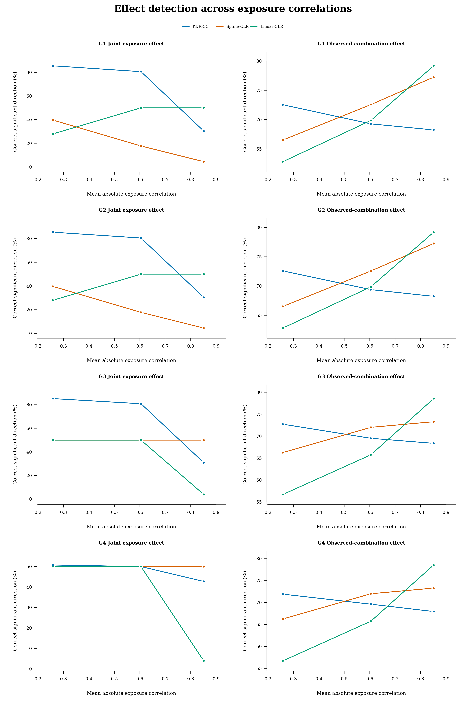
Each point summarizes usable independent repetitions under one overall-correlation setting. The horizontal coordinate is the mean absolute off-diagonal Pearson correlation in the independent evaluation distribution. Joint contrasts use a common concentration path; observed-combination contrasts use the distribution of the corresponding setting. Model configuration and response coefficients are fixed. The matching correct/incorrect CLR adjustment fits supply G1/G2 and G3/G4 displays. Original results are reused from B; moderate/high results are new D repetitions. B and D batches are independent. Tables report usable counts and Monte Carlo uncertainty.
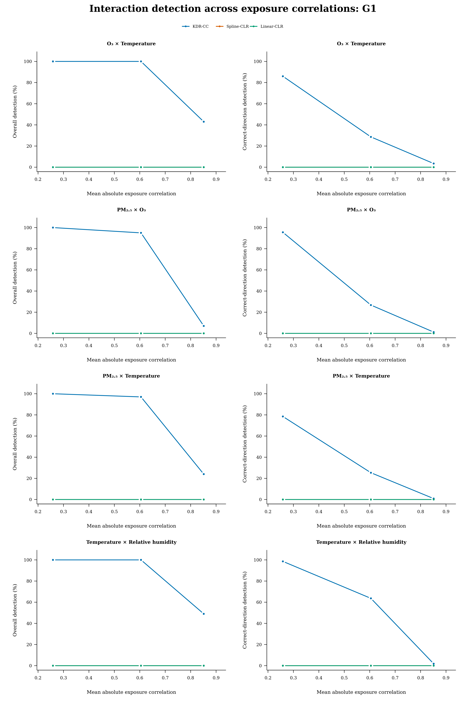
Left panels summarize Holm-corrected overall pairwise detection. Right panels summarize correct significant pointwise directions with Holm correction across the prespecified interaction grid. The same four pairs and constructed grids are evaluated at every correlation setting. Additive comparators have zero four-point interaction contrasts. Tables report usable tests, Monte Carlo uncertainty and wrong-direction rates.
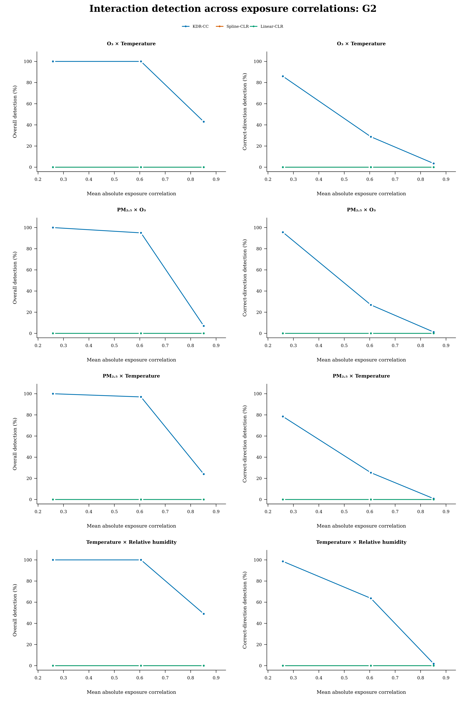
Left panels summarize Holm-corrected overall pairwise detection. Right panels summarize correct significant pointwise directions with Holm correction across the prespecified interaction grid. The same four pairs and constructed grids are evaluated at every correlation setting. Additive comparators have zero four-point interaction contrasts. Tables report usable tests, Monte Carlo uncertainty and wrong-direction rates.
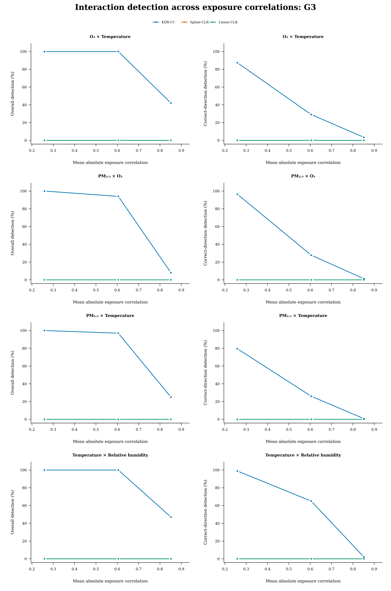
Left panels summarize Holm-corrected overall pairwise detection. Right panels summarize correct significant pointwise directions with Holm correction across the prespecified interaction grid. The same four pairs and constructed grids are evaluated at every correlation setting. Additive comparators have zero four-point interaction contrasts. Tables report usable tests, Monte Carlo uncertainty and wrong-direction rates.
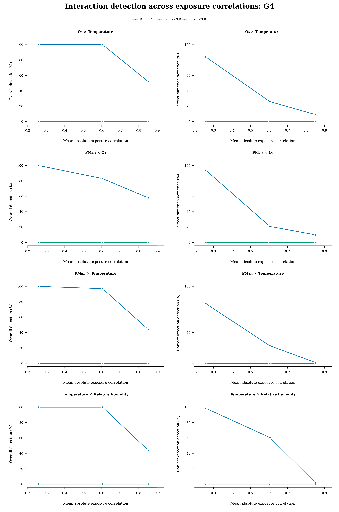
Left panels summarize Holm-corrected overall pairwise detection. Right panels summarize correct significant pointwise directions with Holm correction across the prespecified interaction grid. The same four pairs and constructed grids are evaluated at every correlation setting. Additive comparators have zero four-point interaction contrasts. Tables report usable tests, Monte Carlo uncertainty and wrong-direction rates.
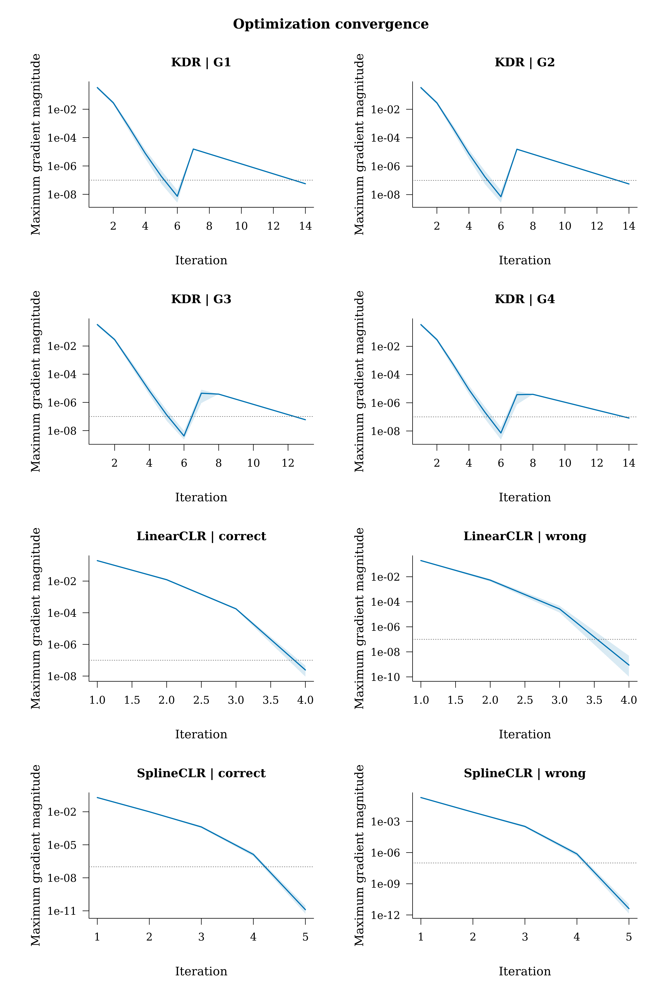
The line is the median gradient magnitude at each recorded iteration; shading is the 10th to 90th percentile range among fits reaching that iteration. The horizontal line is the stopping gradient tolerance. Different objective functions are shown in separate panels.
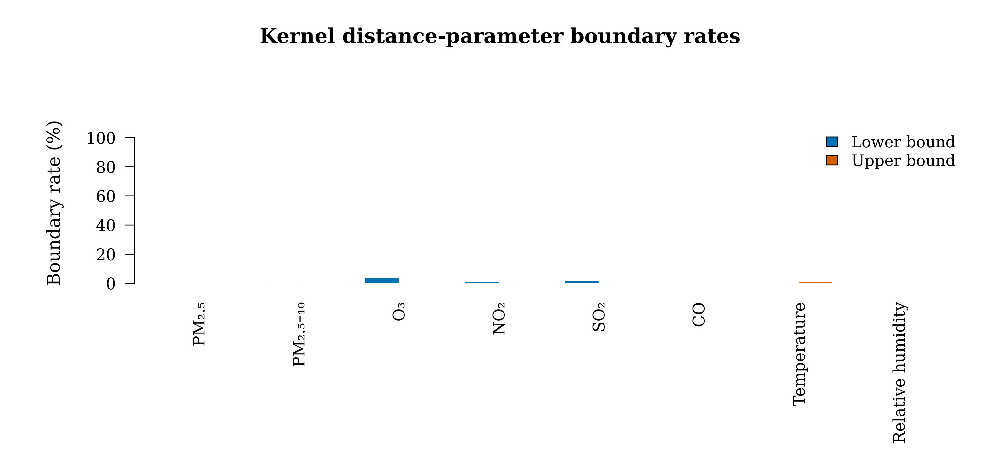
Rates summarize unique fitted kernels. The null-exposure bar pools all null-variable parameters. These numerical diagnostics describe fitted smoothness and are separate from the variable significance tests.
Each point summarizes usable independent repetitions under one overall-correlation setting. The horizontal coordinate is the mean absolute off-diagonal Pearson correlation in the independent evaluation distribution. Joint contrasts use a common concentration path; observed-combination contrasts use the distribution of the corresponding setting. Model configuration and response coefficients are fixed. The matching correct/incorrect CLR adjustment fits supply G1/G2 and G3/G4 displays. Original results are reused from B; moderate/high results are new D repetitions. B and D batches are independent. Tables report usable counts and Monte Carlo uncertainty.
Each point summarizes usable independent repetitions under one overall-correlation setting. The horizontal coordinate is the mean absolute off-diagonal Pearson correlation in the independent evaluation distribution. Joint contrasts use a common concentration path; observed-combination contrasts use the distribution of the corresponding setting. Model configuration and response coefficients are fixed. The matching correct/incorrect CLR adjustment fits supply G1/G2 and G3/G4 displays. Original results are reused from B; moderate/high results are new D repetitions. B and D batches are independent. Tables report usable counts and Monte Carlo uncertainty.
Each point summarizes usable independent repetitions under one overall-correlation setting. The horizontal coordinate is the mean absolute off-diagonal Pearson correlation in the independent evaluation distribution. Joint contrasts use a common concentration path; observed-combination contrasts use the distribution of the corresponding setting. Model configuration and response coefficients are fixed. The matching correct/incorrect CLR adjustment fits supply G1/G2 and G3/G4 displays. Original results are reused from B; moderate/high results are new D repetitions. B and D batches are independent. Tables report usable counts and Monte Carlo uncertainty.
Identification requires a Holm-adjusted numerical quadratic-form tail probability below 0.05. Intervals are 95% Wilson Monte Carlo intervals across usable repetitions. Humidity acts through a temperature interaction, without a main effect.
Counts refer to complete independent repetitions. Completed records include failures. Point, covariance and variable-test availability are reported separately. Selection is requested for KDR-CC G1 only. Failed and unavailable tests retain explicit status and availability counts.
Saved B fits are reused after scientific-setting and checksum verification. The D run contains their snapshot and file hashes in baseline_B. B and D use independent simulation batches.
N and L count complete matched sets. M is the number of Gaussian-kernel centers. Kappa is the coefficient penalty during outcome-supervised kernel learning. Lambda multiplies the normalized mixed-derivative penalty in final estimation.
Rates are computed across usable KDR-CC G1 repetitions. Limits are 95% Wilson Monte Carlo intervals. Humidity enters through its interaction with temperature.
Marginal maps, calibration and validation samples are independent. The calibrated score-mixing parameter is fixed before fitting. Target mean absolute Pearson correlations and pairwise lower bounds refer to final lag-defined exposures.
Each setting uses the same model configuration and its own independent evaluation distribution for observed combinations. Constructed contrasts share the reference concentrations. Counts and Monte Carlo errors are based on complete independent repetitions.
Each setting uses the same model configuration and its own independent evaluation distribution for observed combinations. Constructed contrasts share the reference concentrations. Counts and Monte Carlo errors are based on complete independent repetitions.
Each setting uses the same model configuration and its own independent evaluation distribution for observed combinations. Constructed contrasts share the reference concentrations. Counts and Monte Carlo errors are based on complete independent repetitions.
Each setting uses the same model configuration and its own independent evaluation distribution for observed combinations. Constructed contrasts share the reference concentrations. Counts and Monte Carlo errors are based on complete independent repetitions.
Each setting uses the same model configuration and its own independent evaluation distribution for observed combinations. Constructed contrasts share the reference concentrations. Counts and Monte Carlo errors are based on complete independent repetitions.
Mean true-positive rates average the selected fraction of eight active exposures across complete usable repetitions. Variable tests use Holm adjustment. This module contains eight active exposures.
Original results reuse the completed module B fits. Moderate and high dependence are calibrated on final lag-defined exposures using fixed marginal maps and a common Gaussian score. Target means and minimum absolute correlations are checked on independent calibration and evaluation samples. All 28 exposure pairs enter the mean absolute coefficient. The recorded mixing parameter is internal to calibration.
Baseline Shapley values allocate h(x)-h(b), with b the marginal-median reference. Importance is the evaluation-distribution mean absolute Shapley value; shares divide this quantity by its sum over all candidate exposures. Shares sum to 100% within a fit. Their sign-free magnitude includes main and interaction contributions. True and fitted allocations use identical combinations and reference levels. Uncertainty across repetitions is summarized by SD and MCSE. Overall correlation setting: Original (module B) ; mean absolute Pearson coefficient = 0.2586 .
Contrasts are on the log OR scale at a common marginal-median background. RMS bias is sqrt(mean over evaluation points of squared repetition-mean error). RMSE is sqrt(mean squared error over all usable repetitions and points). MCSE uses deletion of an entire repetition; the empirical SD is summarized on its root-mean-square scale. Identically zero anchor contrasts are excluded; other zero true effects enter the absolute-error summaries. Usable/planned counts are reported separately for each component. Independent repetitions determine Monte Carlo uncertainty. Fit scenario records the CLR adjustment fit and its original independent-repetition count. Interaction is defined by four function evaluations; additive CLR models have zero log-OR interaction by construction. Overall correlation setting: Original (module B) ; mean absolute Pearson coefficient = 0.2586 .
For each pair, the statistic is the mean squared four-point log-OR interaction contrast on the fixed evaluation grid. Its centered-Gaussian null distribution is a weighted chi-square sum computed numerically with covariance eigenvalues. Holm correction covers the four prespecified pairs within each fit; alpha is 0.05 . Wilson intervals quantify Monte Carlo uncertainty across independent repetitions. Usable tests are reported separately. Overall correlation setting: Original (module B) ; mean absolute Pearson coefficient = 0.2586 .
A correct direction requires a nonzero true contrast, a significant two-sided contrast test and agreement with its sign. The corrected version applies Holm across all non-anchor grid contrasts of all four pairs in each fit. Rates first average within each pair and repetition, then across repetitions; MCSE uses whole repetitions. The interaction sign can differ across the grid. Overall pair detection and pointwise direction detection are distinct criteria. Overall correlation setting: Original (module B) ; mean absolute Pearson coefficient = 0.2586 .
Contribution share error is the repetition-average root mean squared percentage-point error divided by 100. Miss rates equal one minus corrected detection rates; direction errors use the pointwise Holm rule. Counts show available interpretation and interaction repetitions. Overall correlation setting: Original (module B) ; mean absolute Pearson coefficient = 0.2586 .
All contrasts and confidence limits are exponentiated log OR contrasts. Single-exposure P75-versus-P25 contrasts hold the other exposures at their reference; temperature uses P10/P90 versus its specified optimum. Joint contrasts change all candidate exposures simultaneously. Mean CI limits average the lower and upper pointwise limits separately. RMS bias and RMSE use log OR; absolute OR error is 100*abs(exp(estimate-truth)-1). Overall correlation setting: Original (module B) ; mean absolute Pearson coefficient = 0.2586 .
Each row identifies one planned saved fit. Predictions require its saved coefficients and kernel or comparator basis. Pending fits, failed fits and missing model files remain explicit. Comparator fits are evaluated once per adjustment specification and repetition, then displayed in the corresponding G scenarios. Overall correlation setting: Original (module B) ; mean absolute Pearson coefficient = 0.2586 .
Contrasts are on the log OR scale at a common marginal-median background. RMS bias is sqrt(mean over evaluation points of squared repetition-mean error). RMSE is sqrt(mean squared error over all usable repetitions and points). MCSE uses deletion of an entire repetition; the empirical SD is summarized on its root-mean-square scale. Identically zero anchor contrasts are excluded; other zero true effects enter the absolute-error summaries. Usable/planned counts are reported separately for each component. Independent repetitions determine Monte Carlo uncertainty. Fit scenario records the CLR adjustment fit and its original independent-repetition count. A single-exposure curve describes a fixed-background contrast, including any interactions at that background, rather than a unique main-effect decomposition. Overall correlation setting: Original (module B) ; mean absolute Pearson coefficient = 0.2586 .
Baseline Shapley values allocate h(x)-h(b), with b the marginal-median reference. Importance is the evaluation-distribution mean absolute Shapley value; shares divide this quantity by its sum over all candidate exposures. Shares sum to 100% within a fit. Their sign-free magnitude includes main and interaction contributions. True and fitted allocations use identical combinations and reference levels. Uncertainty across repetitions is summarized by SD and MCSE. Overall correlation setting: High ; mean absolute Pearson coefficient = 0.8515 .
Contrasts are on the log OR scale at a common marginal-median background. RMS bias is sqrt(mean over evaluation points of squared repetition-mean error). RMSE is sqrt(mean squared error over all usable repetitions and points). MCSE uses deletion of an entire repetition; the empirical SD is summarized on its root-mean-square scale. Identically zero anchor contrasts are excluded; other zero true effects enter the absolute-error summaries. Usable/planned counts are reported separately for each component. Independent repetitions determine Monte Carlo uncertainty. Fit scenario records the CLR adjustment fit and its original independent-repetition count. Interaction is defined by four function evaluations; additive CLR models have zero log-OR interaction by construction. Overall correlation setting: High ; mean absolute Pearson coefficient = 0.8515 .
For each pair, the statistic is the mean squared four-point log-OR interaction contrast on the fixed evaluation grid. Its centered-Gaussian null distribution is a weighted chi-square sum computed numerically with covariance eigenvalues. Holm correction covers the four prespecified pairs within each fit; alpha is 0.05 . Wilson intervals quantify Monte Carlo uncertainty across independent repetitions. Usable tests are reported separately. Overall correlation setting: High ; mean absolute Pearson coefficient = 0.8515 .
A correct direction requires a nonzero true contrast, a significant two-sided contrast test and agreement with its sign. The corrected version applies Holm across all non-anchor grid contrasts of all four pairs in each fit. Rates first average within each pair and repetition, then across repetitions; MCSE uses whole repetitions. The interaction sign can differ across the grid. Overall pair detection and pointwise direction detection are distinct criteria. Overall correlation setting: High ; mean absolute Pearson coefficient = 0.8515 .
Contribution share error is the repetition-average root mean squared percentage-point error divided by 100. Miss rates equal one minus corrected detection rates; direction errors use the pointwise Holm rule. Counts show available interpretation and interaction repetitions. Overall correlation setting: High ; mean absolute Pearson coefficient = 0.8515 .
All contrasts and confidence limits are exponentiated log OR contrasts. Single-exposure P75-versus-P25 contrasts hold the other exposures at their reference; temperature uses P10/P90 versus its specified optimum. Joint contrasts change all candidate exposures simultaneously. Mean CI limits average the lower and upper pointwise limits separately. RMS bias and RMSE use log OR; absolute OR error is 100*abs(exp(estimate-truth)-1). Overall correlation setting: High ; mean absolute Pearson coefficient = 0.8515 .
Each row identifies one planned saved fit. Predictions require its saved coefficients and kernel or comparator basis. Pending fits, failed fits and missing model files remain explicit. Comparator fits are evaluated once per adjustment specification and repetition, then displayed in the corresponding G scenarios. Overall correlation setting: High ; mean absolute Pearson coefficient = 0.8515 .
Contrasts are on the log OR scale at a common marginal-median background. RMS bias is sqrt(mean over evaluation points of squared repetition-mean error). RMSE is sqrt(mean squared error over all usable repetitions and points). MCSE uses deletion of an entire repetition; the empirical SD is summarized on its root-mean-square scale. Identically zero anchor contrasts are excluded; other zero true effects enter the absolute-error summaries. Usable/planned counts are reported separately for each component. Independent repetitions determine Monte Carlo uncertainty. Fit scenario records the CLR adjustment fit and its original independent-repetition count. A single-exposure curve describes a fixed-background contrast, including any interactions at that background, rather than a unique main-effect decomposition. Overall correlation setting: High ; mean absolute Pearson coefficient = 0.8515 .
Baseline Shapley values allocate h(x)-h(b), with b the marginal-median reference. Importance is the evaluation-distribution mean absolute Shapley value; shares divide this quantity by its sum over all candidate exposures. Shares sum to 100% within a fit. Their sign-free magnitude includes main and interaction contributions. True and fitted allocations use identical combinations and reference levels. Uncertainty across repetitions is summarized by SD and MCSE. Overall correlation setting: Moderate ; mean absolute Pearson coefficient = 0.6047 .
Contrasts are on the log OR scale at a common marginal-median background. RMS bias is sqrt(mean over evaluation points of squared repetition-mean error). RMSE is sqrt(mean squared error over all usable repetitions and points). MCSE uses deletion of an entire repetition; the empirical SD is summarized on its root-mean-square scale. Identically zero anchor contrasts are excluded; other zero true effects enter the absolute-error summaries. Usable/planned counts are reported separately for each component. Independent repetitions determine Monte Carlo uncertainty. Fit scenario records the CLR adjustment fit and its original independent-repetition count. Interaction is defined by four function evaluations; additive CLR models have zero log-OR interaction by construction. Overall correlation setting: Moderate ; mean absolute Pearson coefficient = 0.6047 .
For each pair, the statistic is the mean squared four-point log-OR interaction contrast on the fixed evaluation grid. Its centered-Gaussian null distribution is a weighted chi-square sum computed numerically with covariance eigenvalues. Holm correction covers the four prespecified pairs within each fit; alpha is 0.05 . Wilson intervals quantify Monte Carlo uncertainty across independent repetitions. Usable tests are reported separately. Overall correlation setting: Moderate ; mean absolute Pearson coefficient = 0.6047 .
A correct direction requires a nonzero true contrast, a significant two-sided contrast test and agreement with its sign. The corrected version applies Holm across all non-anchor grid contrasts of all four pairs in each fit. Rates first average within each pair and repetition, then across repetitions; MCSE uses whole repetitions. The interaction sign can differ across the grid. Overall pair detection and pointwise direction detection are distinct criteria. Overall correlation setting: Moderate ; mean absolute Pearson coefficient = 0.6047 .
Contribution share error is the repetition-average root mean squared percentage-point error divided by 100. Miss rates equal one minus corrected detection rates; direction errors use the pointwise Holm rule. Counts show available interpretation and interaction repetitions. Overall correlation setting: Moderate ; mean absolute Pearson coefficient = 0.6047 .
All contrasts and confidence limits are exponentiated log OR contrasts. Single-exposure P75-versus-P25 contrasts hold the other exposures at their reference; temperature uses P10/P90 versus its specified optimum. Joint contrasts change all candidate exposures simultaneously. Mean CI limits average the lower and upper pointwise limits separately. RMS bias and RMSE use log OR; absolute OR error is 100*abs(exp(estimate-truth)-1). Overall correlation setting: Moderate ; mean absolute Pearson coefficient = 0.6047 .
Each row identifies one planned saved fit. Predictions require its saved coefficients and kernel or comparator basis. Pending fits, failed fits and missing model files remain explicit. Comparator fits are evaluated once per adjustment specification and repetition, then displayed in the corresponding G scenarios. Overall correlation setting: Moderate ; mean absolute Pearson coefficient = 0.6047 .
Contrasts are on the log OR scale at a common marginal-median background. RMS bias is sqrt(mean over evaluation points of squared repetition-mean error). RMSE is sqrt(mean squared error over all usable repetitions and points). MCSE uses deletion of an entire repetition; the empirical SD is summarized on its root-mean-square scale. Identically zero anchor contrasts are excluded; other zero true effects enter the absolute-error summaries. Usable/planned counts are reported separately for each component. Independent repetitions determine Monte Carlo uncertainty. Fit scenario records the CLR adjustment fit and its original independent-repetition count. A single-exposure curve describes a fixed-background contrast, including any interactions at that background, rather than a unique main-effect decomposition. Overall correlation setting: Moderate ; mean absolute Pearson coefficient = 0.6047 .
RMS bias is the square root of the mean squared pointwise bias across common evaluation points. RMSE averages squared error over repetitions and points before taking the square root. Both are on the log OR scale. MCSE for these aggregate measures uses deletion of one entire repetition. Correct-direction detection requires the nominal 95% interval to exclude zero on the true-effect side; exact zero-reference contrasts are excluded. Wrong-direction significant detection is also reported. Independent repetitions determine Monte Carlo uncertainty.
Means and standard deviations use the independent calibration-validation sample. Fixed empirical marginal transforms approximate the original univariate distributions. Recoupling changes the joint exposure dependence, including its temporal structure and associations with the time-varying confounder.
Positive distance parameters control Gaussian kernel smoothness. Bound indicators use a 1e-6 tolerance on the log scale. Null variables have their own distance parameters.
Each independent kernel initialization reports its objective, projected gradient, optimizer status and bound hits. Shared kernels appear once rather than once per nuisance scenario.
One row per planned fit. Point convergence, interval availability, interpretation availability and recorded errors are separate fields. Penalized convergence is assessed by the objective gradient and scaled step; the unpenalized equation residual is reported alongside it.
Error (%) = 100 * abs(exp(estimated log OR - true log OR) - 1). Distributional summaries pool evaluation points and repetitions. MCSE of the mean is computed across repetition-level means. No acceptance threshold or clipping of large errors is used.
Pearson correlations use all candidate-date exposure measurements in the independent evaluation sample. Candidate-date rows retain the prescribed fixed-lag exposure definitions.
Joint paths and their true contrasts are common across settings. Actual-combination contrasts use the distribution of each setting with the common median reference. Bias and RMSE use log OR. OR errors are percentages. CLR adjustment fits are reused for their corresponding nuisance scenarios. Repetition counts, uncertainty and Monte Carlo errors accompany each metric.
Times are recorded elapsed seconds for individual components on the running hardware. Shared learning and nuisance components are reused. Row-level component sums describe a fit in isolation; actual total elapsed time is recorded in the run log. G-family reuse can reduce observed nuisance timings. Memory is the sampled process working-set maximum across the relevant stages. R may retain allocator memory between tasks. Cache is the measured working-cache size before removal. Missing measurements are reported as NA, never zero.
Rates are computed within each usable repetition and then averaged. TPR uses eight active exposures; FPR uses the candidate null exposures and is undefined when none are present. Monte Carlo intervals use repetition-level rates. Usable and planned repetitions are shown. These are empirical operating characteristics of the regularized test conditional on the learned kernel.
Empirical SD is computed across independent repetitions at each fixed point and summarized by its root mean square. Model SE is summarized on the same squared scale. SE ratio is model SE divided by empirical SD; its reference value is one. Coverage is the average pointwise coverage of nominal 95% intervals and is a secondary assessment. Intervals condition on the independently learned kernel; approximation and regularization bias are assessed separately through their empirical errors and coverage. Empirical variability across repetitions can also include kernel learning. Width and coverage must be interpreted together with bias and estimation error.